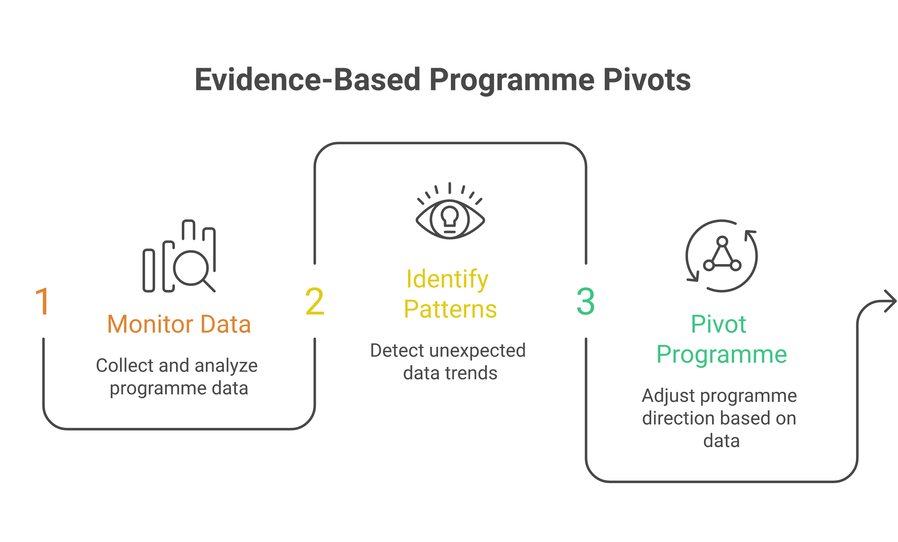
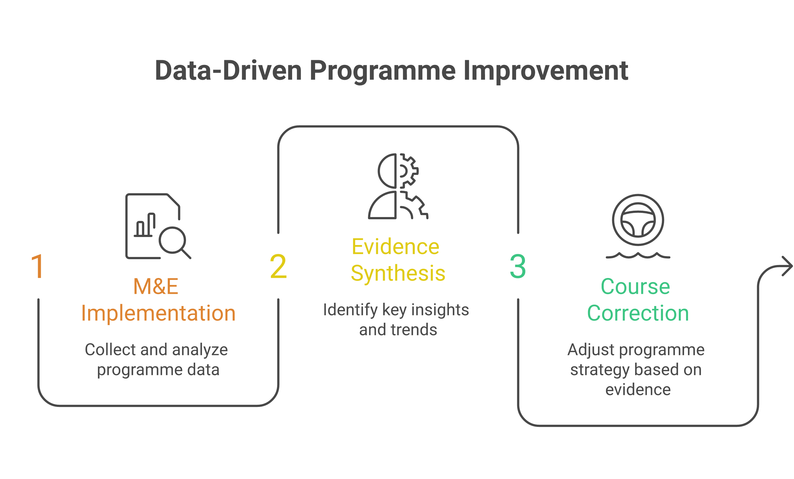

The courage to follow the evidence
In development work, pivoting is hard. Organisations invest years building programmes, training staff, developing materials, and cultivating donor relationships around a particular theory of change. When monitoring data suggests the theory is wrong, or that a different approach would be more effective, the institutional pressure to ignore the evidence can be overwhelming. Some follow the evidence anyway, and the three cases below show what the evidence said and what came after.
These three stories from Indian development show what monitoring and evaluation evidence can say once it looks past outputs. The gap between producing data and actually using it is well documented: MEASURE Evaluation's data demand and use framework, written for health information systems, makes the point that building systems that capture quality data is only half the task: decision-makers also have to want to use the data and be equipped to act on it. Each story below relies on strong data quality as the foundation. Each is drawn from published research. The cases differ in how much of a change of course the sources document, and each section says which.

Story one: India's ICDS, the nutrition system that put food ahead of feeding behaviour
India's Integrated Child Development Services (ICDS) is among the world's largest early childhood programmes. On 28 February 2025, 10.12 crore (about 101 million) beneficiaries were registered on its Poshan Tracker app, served through roughly 14 lakh Anganwadi centres. When the World Bank studied the programme in 2005, the Supplementary Nutrition Programme (SNP) accounted for about two-thirds of its total cost, and food did reach children: an average of about 20 to 80 children per centre ate there, depending on location, and in most states 20 to 25 per centre also took food home. Distribution is easy to count, which is where the trap behind Goodhart's law: "when a measure becomes a target, it ceases to be a good measure." Marilyn Strathern quoted that wording in a 1997 paper. The Bank's authors saw a "food bias" in ICDS: staff and beneficiaries alike treated food distribution as if it were the whole nutrition effort.
Then came the outcome data. A World Bank discussion paper by Gragnolati, Shekar, Das Gupta, Bredenkamp & Lee (2005), India's Undernourished Children: A Call for Reform and Action, set out the problem. About 60 million children in India were underweight, and undernutrition had fallen only modestly during the 1990s, lagging countries with similar economic growth. In a multivariate model of data from Kerala, Rajasthan and Uttar Pradesh collected between 2000 and 2002, children in villages with an Anganwadi centre were not significantly less likely to be underweight or ill than other children.
The deeper analysis pointed to delivery. Take-home food leaked: in Madhya Pradesh only about a third of children consumed all of it themselves, a third consumed less than a quarter, and 6% consumed none. Anganwadi workers could spend up to 40% of their time on supplementary nutrition and a further 39% on preschool education, which left little for growth promotion, nutrition education and home visits. Most children under three, the group that suffers most from malnutrition, were not reached with counselling on feeding and child care. In the authors' words, ICDS had given "more attention to increasing coverage than to improving the quality of service delivery."
What followed cannot be traced to one report. Alive & Thrive, funded by the Gates Foundation and managed by FHI 360, gives technical support to the Uttar Pradesh State Nutrition Mission on maternal and infant and young child nutrition. POSHAN Abhiyaan, launched on 8 March 2018, gave Anganwadi workers a mobile application for service delivery and monitoring, added nutrition counselling training, and tied a monthly incentive to home visits and growth monitoring. And IDinsight's 2021 report on Take Home Ration in Rajasthan and Jharkhand cites its own surveys finding that about a third of eligible beneficiaries in Rajasthan reported receiving the ration in January 2020, against about two-thirds in Jharkhand.
Sources: Gragnolati et al. (2005), India's Undernourished Children: A Call for Reform and Action, World Bank; Alive & Thrive page, Uttar Pradesh National Health Mission; Press Information Bureau release on the Poshan Tracker (March 2025); IDinsight (2021), Improving the Implementation of the Take Home Ration Programme Under ICDS; World Bank, Overview of POSHAN Abhiyaan.
"However, more attention has been given to increasing coverage than to improving the quality of service delivery and to distributing food rather than changing family-based feeding and caring behavior. This has resulted in limited impact.": Gragnolati et al., World Bank (2005)
Story two: JEEViKA in Bihar, a livelihoods programme whose measured gains were in debt and women's agency
JEEViKA (the Bihar Rural Livelihoods Project) was launched to combat rural poverty by organising poor women into Self-Help Groups (SHGs), linking them to credit and offering livelihood training. From 2008 to 2011 the project mobilised more than 1.8 million women into 154,626 SHGs.
The economic results were mixed. Datta (2015), using a retrospective baseline survey, an endline survey in late 2011 and propensity score matching, published in World Development, found a small shift towards cheaper loans and borrowing for productive needs, and more savings. The World Bank's note on the study reports no effect on land ownership or housing quality and consumption patterns similar in treatment and control villages, and puts the mixed results down partly to a short evaluation horizon.
The same survey found larger effects on women's agency. The World Bank's note on the study says JEEViKA "has greatly improved women's mobility, participation in decision making and propensity to engage in community based collective action." It reports that 5% more women in project areas go to health centres and attend regular gram sabha meetings, and that 18 to 20% more have a say in the political preferences of their households.
The sources reviewed here do not document a formal change of strategy in response to these findings, so this case shows what an evaluation can surface and not a pivot. A cost study puts JEEViKA at more than 11 million women by 2018-19, with average annual spending per member falling from almost $60 in 2007 to $6 in 2018.
Sources: Datta, U. (2015), "Socio-Economic Impacts of JEEViKA: A Large-Scale Self-Help Group Project in Bihar, India," World Development, Vol. 68, pp. 1–18; Hoffmann, V., Rao, V., Surendra, V. & Datta, U. (2021), "Relief from Usury: Impact of a Self-Help Group Lending Program in Rural India," Journal of Development Economics; World Bank (2020), Measuring Empowerment: JEEViKA's Success in Empowering the Women of Rural Bihar, Impact Note; Siwach, G., Paul, S. and de Hoop, T. (2021), Implications of Scale for Program Costs and Cost-Effectiveness: Evidence from JEEViKA, Evidence Consortium on Women's Groups.
Story three: Pratham, an education organisation that kept redesigning its model as it scaled
Pratham is one of India's largest education NGOs, and its sequence of trials with J-PAL researchers is among the best documented in the sector. Its flagship Read India programme, rolled out in 2007, reached over 33 million children within two years.
Pratham then ran randomised evaluations of Read India with J-PAL researchers, documented in Banerjee, Banerji, Berry, Duflo et al. (2017), "From Proof of Concept to Scalable Policies," published in the Journal of Economic Perspectives. The pattern was mixed. Volunteer-led classes outside school hours produced large gains in Jaunpur, Uttar Pradesh. In Bihar and Uttarakhand, where the programme moved into regular classes with government teachers, the materials-only and materials-plus-training versions had no effect on language scores. In Bihar over 80 percent of teachers were trained and used the materials more than half the time, so the programme kept its form but lost its central feature, since only 0 to 4 percent of regular classes were grouped by learning level. A one-month summer camp run by the same government teachers did raise scores, which the authors read as a sign that teachers can deliver the method when it is the point of the exercise. Lant Pritchett, Michael Woolcock and Matt Andrews use the term isomorphic mimicry for institutions that adopt the outward form of a functioning organisation while the function is missing. Their examples come from government capability, and applying the idea to Read India is an interpretation.
Pratham responded by testing new designs of what it calls Teaching at the Right Level (TaRL). In Haryana in 2012-13, during a state-mandated extra hour in the school day, children in grades 3 to 5 were regrouped by level and taught by their own teachers, supervised by government coordinators, and Hindi scores rose by 0.2 levels. In Uttar Pradesh in 2013-14, Pratham tested in-school learning camps of 10 or 20 days, run by Pratham staff and trained local volunteers while regular teaching was suspended, for 50 days a year. Test scores rose by 0.7 to 1.0 levels, and the share of children who could read a paragraph or story rose from 24% in the control group to 49%.
Bihar's government announced Mission Gunvatta in April 2013, regrouping children in standards 3 to 5 by learning level for two hours a day, building on earlier pilots with Pratham in Jehanabad and East Champaran. Reach grew as well: Pratham's state partnerships covered 6.7 million children in 15 states in 2017-18 and 15.6 million in 2018-19, according to a 2023 Harvard Kennedy School working paper that studies Pratham as a case of adaptive design and evaluation.

Sources: Banerjee, A., Banerji, R., Berry, J., Duflo, E. et al. (2017), "From Proof of Concept to Scalable Policies: Challenges and Solutions, with an Application," Journal of Economic Perspectives, Vol. 31(4), pp. 73–102; Banerjee, A. et al. (2007), "Remedying Education: Evidence from Two Randomized Experiments in India," Quarterly Journal of Economics; Fahsbender, J., Gokhale, S. and Walton, M. (2023), "How Pratham Learns While Scaling: A Case Study of Adaptive Design and Evaluation," Harvard Kennedy School CID Faculty Working Paper No. 438; Banerji, R., Ideas for India, "Education reform and frontline administrators: a case study from Bihar II".
What these stories teach us
These three cases share one feature. Each rested on measurement that went past outputs, underpinned by strong indicators that actually matter. As the World Bank's chief statistician Haishan Fu puts it, "you can't course-correct what you can't see", and seeing clearly meant looking at outcomes as well as outputs. Each case also depended on people willing to record results that contradicted the plan, drawing on the kind of learning culture that makes honest inquiry possible. Only the Pratham case documents an organisation changing its model in response to its own evidence.
All three are in the public record. ICDS's delivery problems are documented in a World Bank discussion paper. JEEViKA's mixed economic results are in a peer-reviewed journal and a World Bank note. Pratham's scaling problems are in the Journal of Economic Perspectives. Each is open to anyone who wants to check the figures against the source.
If you want to build the evaluation skills behind stories like these, our free MEL course, The Evidence Question, works through evidence-based decision-making end-to-end.